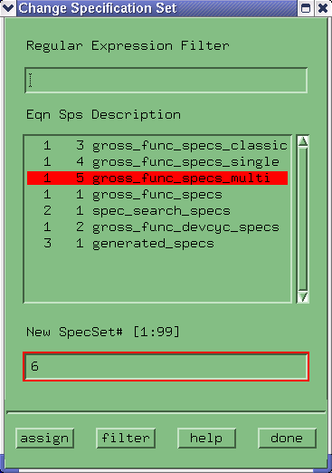

Changing the Specification Set Number
- Click Change Spec Set in the Change pulldown menu.
A screen similar to that of the figure below appears.

- Highlight the specification set whose number you want to change.
- Key in a new number in the New Spec Set # edit field.
- Click assign.
- Repeat these last steps as often as required (for other specification sets), and click done when finished.
Functional changes
- Introduced before SmarTest 6.3.2